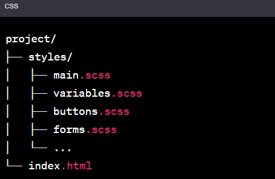
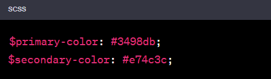
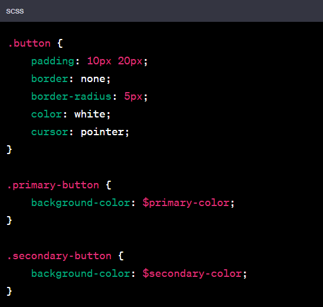
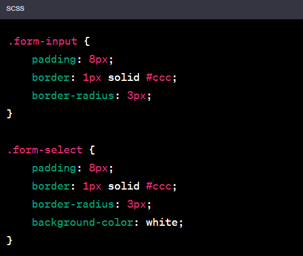
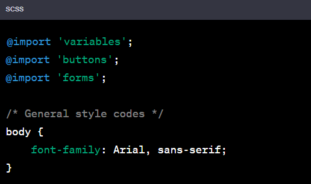

The @import directive is used in SASS to combine style sheets. However, in newer versions of SASS, it's recommended to use @use instead of @import. Nevertheless, if I were to explain @import: Imagine a web project where you have a general stylesheet structure and styles for different components. Let's use SASS to organize these style files.
-
Project Directory Structure:
 -
variables.scss:
In this file, you can define variables like colors, font sizes, etc.
 -
buttons.scss:
Define button styles in this file.
 -
forms.scss:
Define styles for form elements here.
 -
main.scss:
The main stylesheet, main.scss, can import other stylesheets.

This structure allows you to organize style files in a modular way. With the @import directive, you can include different files into the main stylesheet, combining them all into a single CSS file. This makes your style code more organized and manageable.